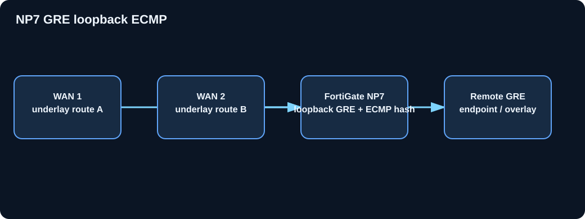
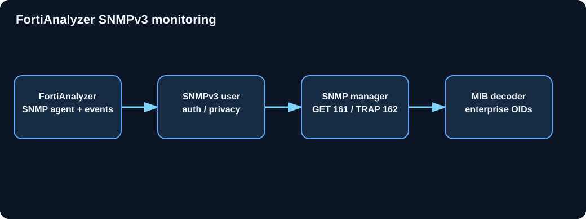
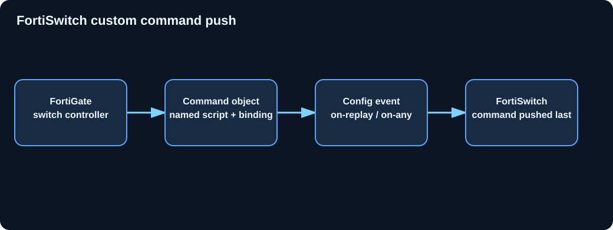
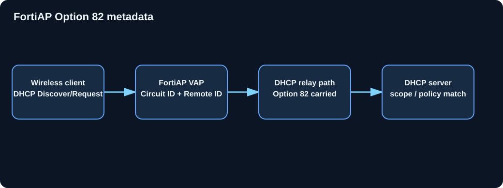
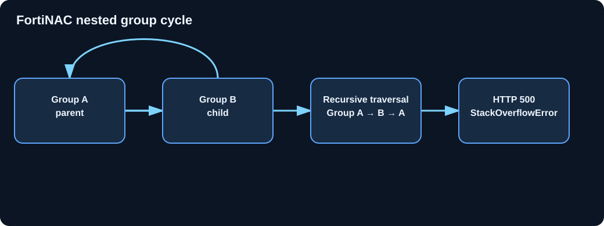
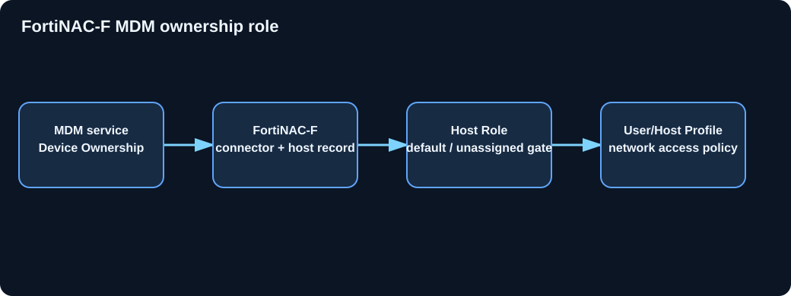
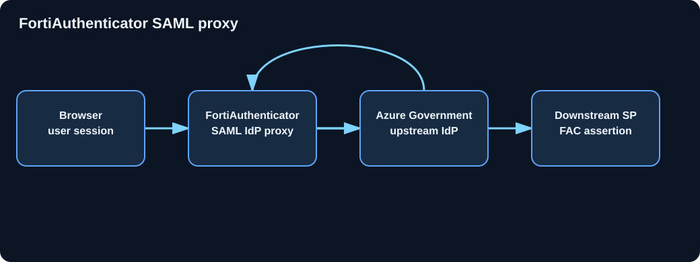
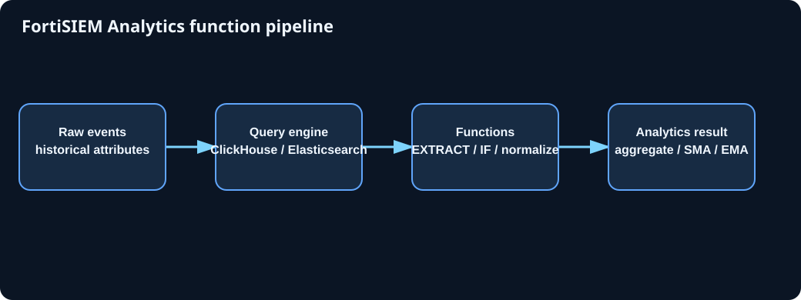
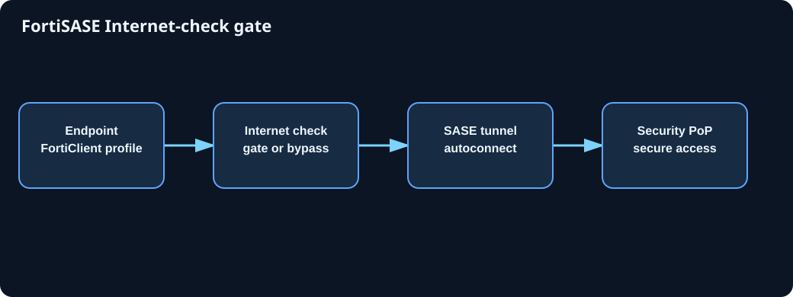
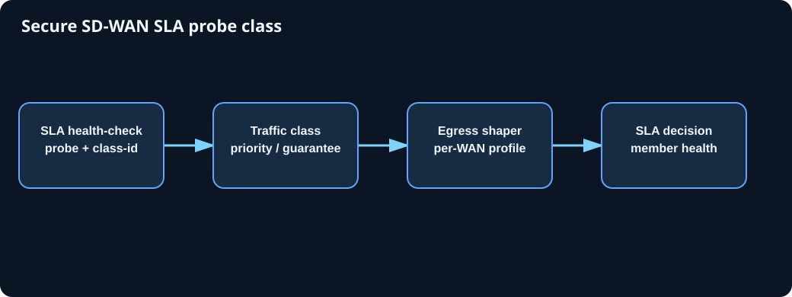

FORTINET ENTERPRISE NETWORKING & SECURITY · DAILY STUDY REPORT
12 feature-led lessons, 12 diagrams, 50 graded questions
November 18, 2026 · 08:38 · Documentation-first coverage across the twelve mandatory Fortinet targets.
Each lesson explains the feature's mechanics, configuration or object relationships, evidence and interpretation, operational failure mode, and remediation. Community material is used only for scenario context; primary lessons use Fortinet documentation.
Run Status: PARTIAL
Discovery and exclusion: completed before topic selection. The rolling inventory covers 330 prior lesson records from 29 actual published report artifacts dated October 20–November 17, 2026. The inventory was committed and fetched back before the twelve new topics were selected.
Research: all 12 Community product areas and all 12 documentation areas were swept. Selected topics passed semantic mechanism/workflow comparison. No selected lesson uses a Community troubleshooting article as its primary source. Older scenario material is explicitly marked.
Content and assets: 12 substantive lessons, exactly 50 unique MCQs with four substantive feedback explanations each, 12 standalone SVGs, and 12 editable draw.io files were generated. GitHub writes and all report/asset read-backs succeeded. A public GitHub Pages fetch returned an internal error, so public reachability remains unconfirmed and is disclosed as PARTIAL.
Delivery: email was not attempted because email is disabled for this run. The recurring automation was not changed.
Lesson navigation
- FortiGate — NP7-offloaded GRE over software loopback
- FortiManager — FortiGuard package version pinning versus immediate downgrade
- FortiAnalyzer — SNMPv3 system monitoring and event traps
- FortiSwitch — bound custom-command execution and push timing
- FortiAP/Wireless — custom DHCP Option 82 per VAP
- FortiNAC — nested group hierarchy and circular-membership failure
- FortiNAC-F — MDM Device Ownership to Host Role mapping
- FortiAuthenticator — SAML IdP proxy for Azure Government
- FortiPAM — Active Directory LDAP password reconciliation
- FortiSIEM — Analytics query functions and engine boundaries
- FortiSASE — Internet-reachability gate before VPN autoconnect
- Secure SD-WAN — traffic-class protection for SLA probes
- 50-question graded examination
FortiGate — NP7-offloaded GRE over software loopback
ECMP hashing for offloaded GRE sessions, inner-header LAG distribution, and the creation-time enablement boundary.

Why this matters
A GRE tunnel can use a software loopback as its local endpoint while the remote GRE gateway is reached through more than one underlay route. That design is useful when the tunnel endpoint should remain stable while the transport path changes. The subtlety is that FortiOS route processing and NP7 fast-path forwarding do not necessarily react to a route change in the same way. A route lookup may immediately select a new WAN for software-forwarded packets, while an already offloaded GRE flow can continue using the old path unless the tunnel was created with the loopback ECMP offload behavior enabled.
FortiOS 8.0 adds two related but distinct controls. loopback-ecmp-offload enables ECMP hashing for NP7-offloaded GRE tunnels over software loopback interfaces. lag-hash-gre controls which inner GRE packet headers contribute to LAG hashing. The first distributes offloaded tunnel sessions across routed next hops; the second improves member distribution inside an aggregate interface. Do not treat them as interchangeable.
Mechanics and configuration
The GRE tunnel still has a local and remote gateway, but its local interface can be a loopback. The underlay routing table resolves the remote gateway through one or more next hops. With loopback ECMP offload enabled, NP7 can hash eligible offloaded GRE sessions across the ECMP path set instead of preserving a single stale path association. For aggregate links, inner L3 and/or L4 values can be included in the hash so many encapsulated flows do not collapse onto one physical member.
config system gre-tunnel
edit "gre1"
set interface "loopb1"
set remote-gw 10.10.10.2
set local-gw 10.10.10.1
set loopback-ecmp-offload enable
set keepalive-interval 1
next
end
config system npu
set lag-hash-gre gre_inner_l3l4
end
config system interface
edit "gre-lag"
set type aggregate
set algorithm NPU-GRE
next
endThe NPU-GRE aggregate algorithm is available only after configuring lag-hash-gre. The documented hash choices are disabled, inner L3, inner L4, or inner L3 plus L4. Select the option based on the traffic mix: inner L3 is useful when many destinations exist; inner L4 can distinguish many application flows between the same endpoint pair; L3/L4 combines both sources of entropy.
Verification and interpretation
First inspect the route to the remote GRE gateway and confirm that the intended ECMP next hops are present. Then inspect the GRE tunnel configuration and the firewall policy's ASIC-offload setting. Capture packets on both WAN uplinks during a controlled route change. The Fortinet Community scenario describes a diagnostic signature in which the first two packets use the new path under FortiOS processing, but later packets continue on the old path after NP7 offload. That difference is stronger evidence than a routing-table change alone.
For LAG distribution, inspect the aggregate interface's traffic counters and the configured hash algorithm while generating multiple inner flows. A route table proves the control-plane next-hop set; it does not prove that NP7 has distributed offloaded sessions across those next hops. A packet capture proves the observed egress path for sampled packets; it does not prove all sessions use the same path.
Operational caveats
loopback-ecmp-offload is a tunnel-creation-time setting and cannot be changed after the GRE tunnel is created. Plan a replacement tunnel and migration if the existing object was created without it. The feature is specific to supported NP7 hardware and software releases. On older releases, disabling auto-asic-offload in the GRE firewall policy can be a workaround, but traffic then loses the NP7 fast path and may consume substantially more CPU. Do not use that workaround as an equivalent performance design.
Field takeaway: when a GRE-over-loopback path changes but only the first packets follow the new WAN, compare software routing with the NP7 offload path. Verify the tunnel's creation-time ECMP option before changing route metrics or repeatedly clearing sessions.
Primary sources: FortiOS 8.0 NP7-offloaded GRE improvements · FortiOS 8.0 release notes. Scenario only: NP7 GRE underlay route-change behavior (2024; outside the 30-day window).
FortiManager — FortiGuard package version pinning versus immediate downgrade
How the preferred package version controls future delivery and, separately, whether managed FortiGates are rolled back immediately.

Purpose and object model
When FortiManager acts as the FortiGuard server for managed FortiGates, it can serve a selected version of a FortiGuard package instead of always providing the latest available object database. This is useful when a signature or application-control database update has changed traffic classification or inspection behavior and operations needs a controlled package ceiling while investigating. It is not the same as installing a firewall policy package: this workflow controls FortiGuard object-package versions delivered to devices.
Each package has a To Be Deployed Version. The default is Latest. FortiManager retains up to 20 object versions by default. Administrators can search packages under FortiGuard > Packages > Receive Status; clear Show Used Objects Only when the required package is not visible, then select Change and choose a version.
The critical two-way decision
After selecting an older version, FortiManager asks whether to Just Set Preferred Version or Downgrade. These are materially different transactions:
- Just Set Preferred Version: a device already running a newer package remains on that newer version. FortiManager stops providing package versions newer than the preferred version on subsequent requests. This is a forward-looking delivery ceiling, not a rollback.
- Downgrade: FortiManager immediately downgrades managed FortiGates that are currently using a later package version, and the selected version also becomes the preferred version for future delivery.
That distinction matters during incident containment. If an administrator wants to stop a new package from spreading while leaving already-updated devices untouched, the pin-only choice is appropriate. If the newer package is itself the suspected cause and the rollback has been tested, the downgrade choice changes installed state now.
Operational workflow and verification
Before changing the version, identify the exact package type and the affected device population. Record each device's installed version, confirm that the target version is retained, and determine whether the change should affect only future requests or also current installations. In Receive Status, compare the installed package version with the To Be Deployed Version. After applying the choice, re-check the device table and then confirm the next FortiGuard update request delivers the intended version.
Do not infer success from the preferred-version field alone. Under pin-only mode, a device can legitimately continue to show a later installed version. That is expected behavior, not a failed downgrade. Conversely, a successful downgrade dialog is not proof that every device has completed its update; inspect each managed device's reported package version and update status.
Failure modes and change control
A common operational error is to select an older preferred version and assume the devices will immediately roll back. The result is mixed package versions across the estate and continued behavior differences. The opposite error is selecting Downgrade when the goal was only to prevent further rollout, creating an unnecessary fleet-wide change. Because only a bounded number of package versions are retained, long-lived rollback plans should not assume that every historical package remains available indefinitely.
FortiGuard package rollback can reduce security coverage or reintroduce older signatures. Treat it as a controlled containment action: identify the package, document the reason, test the selected version, stage the device population, and plan a return to a supported current package.
Field takeaway: always state whether the change is a delivery ceiling or an installed-state rollback. The confirmation dialog's two choices are not cosmetic labels; they define different device transactions.
Primary sources: Choosing a preferred package version to deploy · FortiManager 8.0 downgrade/rollback feature.
FortiAnalyzer — SNMPv3 system monitoring and event traps
Separate polling from asynchronous notifications, configure SNMPv3 security, and decode Fortinet enterprise OIDs.

Purpose and control plane
FortiAnalyzer has its own SNMP agent for monitoring the appliance, independent of the FortiGate log records it stores and analyzes. The agent can answer SNMP queries and send traps originating on the FortiAnalyzer system to an external SNMP manager. The manager can use those values and notifications to monitor appliance health and raise alerts for conditions such as CPU overuse, low memory, low log-disk space, system restart, RAID events, failed power supplies, fan speed, temperature, voltage, and licensed quota thresholds.
Keep three layers separate: the SNMP agent must be enabled; a community or SNMPv3 user must permit the required query/trap functions; and each SNMPv3 user must have notification hosts and event subscriptions configured. A successful poll does not prove that traps are enabled or that the manager is an allowed notification host. A received trap does not prove that the manager has the correct MIBs to interpret its enterprise OID.
SNMPv3 security and ports
Enable the agent under System Settings > Network. Create an SNMPv3 user and choose a security level. The guide documents No Authentication/No Privacy, Authentication/No Privacy, and Authentication/Privacy. Authentication can use MD5 or SHA-family algorithms including SHA-224/256/384/512; privacy options include AES-family algorithms and DES. For a production monitoring path, use the strongest mutually supported authentication and privacy combination and protect the credentials as operational secrets.
Queries normally use UDP/161; traps use UDP/162 unless a different remote trap port is configured. Add one or more notification hosts, enable the required query and trap functions, and explicitly select the SNMP events that should generate notifications. Do not assume that enabling the global SNMP agent automatically subscribes every event for every user.
MIBs and evidence
The SNMP manager needs the matching Fortinet Core and FortiAnalyzer MIBs to decode enterprise-specific values. The Core MIB contains common Fortinet system/trap information; the FortiAnalyzer MIB contains appliance-specific information. Standard MIB support does not replace the vendor MIBs. A manager that displays a numeric enterprise OID may have received the trap correctly while lacking the decoder needed to show a friendly object name.
Verify polling and traps independently. First perform a query against the FortiAnalyzer agent using the configured SNMPv3 user. Then generate or wait for a selected event and verify that the manager receives a trap from the expected source address and port. Check the user security level, notification-host address, trap enablement, selected event list, firewall path, and MIB version separately. On the FortiAnalyzer GUI, the SNMP section exposes whether queries and traps are enabled for each user/community.
Interpretation boundaries
A CPU-overuse trap proves that the FortiAnalyzer agent emitted a system event notification; it does not prove that log ingestion, SQL indexing, or Analytics processing is healthy. Likewise, a successful query proves the SNMP request/response path, not the asynchronous trap path. The older Community per-ADOM SNMP article is useful context for MIB indexing, but it describes querying ADOM resource tables rather than this appliance-level SNMPv3 event workflow.
Field takeaway: test GET and TRAP as separate paths, and treat MIB loading as a decoding dependency rather than a transport prerequisite.
Primary sources: SNMP agent · SNMP v3 users · SNMP MIBs. Older scenario context: per-ADOM SNMP information (April 2026).
FortiSwitch — bound custom-command execution and push timing
Understand one-time scripts, per-switch bindings, on-replay/on-any behavior, and why custom commands execute last.

Controller model
In a FortiLink-managed deployment, the FortiGate switch controller owns the managed-switch configuration lifecycle. A custom command is a named block of generic FortiSwitch CLI commands stored on the FortiGate. It can be executed once against a selected switch, or bound to a managed-switch serial so that the command becomes part of that switch's controller-managed configuration. These two uses have different persistence behavior.
A one-time execution is useful for a controlled test, but because the script is not bound to the switch, the switch may reset some parameters when it restarts. If a command must remain part of the managed configuration, bind it under the target serial number. Also remember that locally controlled switch settings can be overwritten by the controller; custom commands are not a license to bypass the FortiLink ownership model.
Define and bind the script
config switch-controller custom-command
edit "stp-age-10"
set command "config switch stp setting %0a set max-age 10 %0a end %0a"
next
end
config switch-controller managed-switch
edit "S524DF4K15000024"
config custom-command
edit 1
set command-name "stp-age-10"
next
end
next
endThe %0a sequence represents a line break in the command string. The binding is per managed-switch serial and references the named custom command. Verify the exact serial number and the command name; a valid script object that is not bound to the intended switch will not follow that switch's configuration lifecycle.
Push timing: on-replay versus on-any
FortiOS 8.0 adds a control for when bound custom commands are pushed. The default on-replay mode sends them only when the full switch configuration is updated. The on-any mode sends the bound commands after any configuration change on the managed switch. The commands are pushed last, after the other configuration changes have been pushed.
config switch-controller global
set switch-custom-cmd on-any
endThis matters when a custom command maintains a setting that is not represented by the normal FortiGate switch-controller object model. Under the default mode, a differential port change can be installed while the custom command remains untouched until a full replay. The result looks like a script failure even though the script and binding are valid. Selecting on-any changes the trigger, not the script contents.
Verification and safe operations
Inspect the custom-command object, the serial-specific binding, and the global push mode. Then make a harmless configuration change on the target switch and inspect the controller's push output. The guide's example shows the custom command appearing after the normal port configuration push. Finally verify the intended setting on the switch itself. A controller log showing a command was sent proves the push transaction occurred; it does not prove the switch accepted every command or that a locally controlled setting will persist.
Use a one-time execution only when persistence is not required. Use a bound command for a persistent device-specific extension. Choose on-any when every configuration change must reassert the custom setting; retain on-replay when the command should run only after a complete configuration replay. Test scripts on a lab switch before broad deployment because syntax errors or commands outside the controller's supported ownership model can create drift.
Field takeaway: when a script is present but does not run after a differential configuration update, inspect switch-custom-cmd before rewriting the script.
Primary sources: Executing custom FortiSwitch scripts · Control when custom commands are pushed.
FortiAP/Wireless — custom DHCP Option 82 per VAP
Compose Circuit ID and Remote ID metadata so upstream DHCP policy can identify the AP, SSID, VLAN, profile, and client.

What Option 82 contributes
DHCP Option 82 is relay-agent information. In the FortiAP wireless workflow, insertion adds context to the DHCP request so the upstream DHCP service can identify the access point and wireless network from which a client request originated. This can support differentiated scopes or authorization policies for known APs, SSIDs, VLANs, or client identities. It does not assign an address by itself; the DHCP server still evaluates the request and returns the lease.
FortiOS 8.0 allows administrators to choose any supported combination of Circuit ID and Remote ID sub-options and define a delimiter when multiple Circuit ID values are included. This replaces older fixed styles. Circuit ID describes the access circuit and can include AP MAC, AP model, AP hostname, SSID, SSID type, network type, VLAN, or WTP profile. Remote ID can include the client MAC address.
VAP-level configuration
config wireless-controller vap
edit "dhcp82"
set ssid "dhcp82"
set dhcp-option82-insertion enable
set dhcp-option82-delimiter "+"
set dhcp-option82-circuit-id-insertion ap-mac ap-model ap-hostname wtp-profile
set dhcp-option82-remote-id-insertion client-mac
next
end
config wireless-controller wtp-profile
edit "23JK"
config radio-1
set vap-all manual
set vaps "dhcp82"
end
config radio-2
set vap-all manual
set vaps "dhcp82"
end
next
endThe example uses four Circuit ID fields and a plus delimiter, while Remote ID carries the client MAC. The delimiter matters because the DHCP server may parse the Circuit ID as a structured string. If the server expects a different delimiter or field order, it can receive Option 82 but fail to match the intended scope policy.
Dependencies and verification
The FortiAP must run firmware 7.6.4 or later for the customizable behavior. Enable insertion on the VAP and ensure that the VAP is actually assigned to the WTP profile and radio used by the client. Then capture a DHCP exchange at a point where the Option 82 field is visible. Confirm that the Circuit ID contains the selected AP/SSID/VLAN/profile fields in the expected order and delimiter, and that Remote ID contains the client MAC when selected.
Check both sides of the transaction. On the AP/controller side, verify that the VAP configuration was delivered. On the DHCP server side, verify the exact Option 82 value received and the policy/scope matched. If the request arrives without Option 82, investigate VAP assignment and firmware support. If Option 82 arrives but the wrong scope is selected, compare the server's matching rule with the actual Circuit ID string. If the server drops the request, check whether it is configured to accept relay-agent information from this path.
Design guidance
Include only identifiers that the DHCP policy actually needs. AP MAC and WTP profile are stable infrastructure identifiers; SSID and VLAN distinguish wireless segments; client MAC provides endpoint-level context but can change with privacy/randomization behavior. Use a delimiter that the server can parse reliably and avoid relying on a single field that is not unique across the deployment.
Field takeaway: troubleshoot Option 82 at the packet boundary. A configured VAP is not proof that the DHCP server received the intended Circuit ID/Remote ID string.
Primary sources: DHCP snooping and Option 82 data insertion · Customizable Option 82 configurations.
FortiNAC — nested group hierarchy and circular-membership failure
Model group membership as a directed acyclic graph and diagnose the HTTP 500/StackOverflowError failure caused by cycles.

Group model and why recursion exists
FortiNAC groups are typed containers that reduce repeated configuration. A group can contain devices, ports, IP phones, hosts, users, or administrators; groups can also contain other groups of the same type. Group membership can be reused for policies and roles, and scheduled tasks can operate on groups. The UI exposes membership relationships through Group Member Of and Show Members. Host groups can also carry aging attributes such as Days Valid and Days Inactive.
Because a group can contain a subgroup, the hierarchy is traversed recursively when FortiNAC renders group trees or resolves membership. The safe data model is a directed acyclic graph: a parent may contain a child group, but the child must not eventually point back to the parent. A self-reference or reciprocal relationship creates an infinite traversal.
Failure signature
A Fortinet Community troubleshooting article dated October 9 describes a case in which the Groups page showed a nonzero group count but displayed no entries and returned HTTP Status 500. The application log contained java.lang.StackOverflowError and repeated calls to getGroupJSONObjectFromNode(). That repeated call is the important clue: the UI is not simply slow because there are many groups; the recursive group-tree walk is not terminating.
The article documented two read-only checks against the group-membership table. Run them only when authorized, after collecting logs, and do not modify the database directly as a routine remediation.
execute db-shell
SELECT ID, PARENT_ID, CHILD_ID, elementClass, soft
FROM bsc.GroupMember
WHERE PARENT_ID = CHILD_ID
AND elementClass = 11
AND soft = 0;For reciprocal edges, the documented diagnostic joins the table to itself so that A→B and B→A are returned as a pair:
SELECT DISTINCT
a.PARENT_ID AS group_a_id,
ga.name AS group_a,
a.CHILD_ID AS group_b_id,
gb.name AS group_b
FROM bsc.GroupMember a
JOIN bsc.GroupMember b
ON a.PARENT_ID = b.CHILD_ID
AND a.CHILD_ID = b.PARENT_ID
JOIN bsc.`Group` ga ON ga.ID = a.PARENT_ID
JOIN bsc.`Group` gb ON gb.ID = a.CHILD_ID
WHERE a.elementClass = 11
AND b.elementClass = 11
AND a.soft = 0
AND b.soft = 0
AND a.PARENT_ID < a.CHILD_ID;Remediation and boundaries
When the UI is available, inspect the selected group's parent relationships with Group Member Of and inspect descendants with Show Members. Remove the offending membership edge through supported administration. When the UI cannot render, collect output.master, the failed GroupActions.jsp request, and the read-only query results for TAC. Do not delete rows or update the database manually without an approved recovery procedure.
Also distinguish this failure from a large but valid group database. The Administration Guide notes that when more than 2,000 groups exist, FortiNAC may ask whether to display all groups; large unfiltered lists can load slowly. A nonzero count plus HTTP 500 and recursive StackOverflowError points to a cycle, not merely the large-list threshold.
Field takeaway: nested groups are useful, but their membership graph must remain acyclic. A single reciprocal edge can break the entire group view.
Primary sources: FortiNAC Groups · Group membership. Scenario only: HTTP 500 from circular group membership (October 9; outside the 30-day window).
FortiNAC-F — MDM Device Ownership to Host Role mapping
Use endpoint ownership from an MDM record as a FortiNAC Host Role filter while respecting the override boundary.

Purpose and data flow
FortiNAC-F can use the Device Ownership value returned by a supported MDM integration to update a host's FortiNAC Host Role. This turns an MDM inventory attribute—such as corporate-owned versus personally owned—into a network-access classification that can be consumed by User/Host Profiles. The feature is optional and is documented for Microsoft Intune, AirWatch, MaaS360, MobileIron, and Citrix MDM integrations in the 7.6.3 release notes.
The flow is not simply “MDM says compliant, so allow access.” The connector retrieves endpoint information from the MDM service; FortiNAC associates that information with the host record; the ownership attribute can update Host Role; and the role becomes a filter in a User/Host Profile. That profile then participates in the configured endpoint-compliance, network-access, or supplicant-policy decision.
Important override boundary
The Administration Guide exposes Update Hosts Role on the MDM service connector. When enabled, the MDM record's Ownership value determines the FortiNAC Host Role. The Host Role is only overridden for hosts with the NAC-Default role or with no assigned role. A manually assigned non-default role is intentionally protected from automatic replacement. The setting is not available for every MDM connector.
This boundary prevents an MDM refresh from silently overwriting a role that an administrator deliberately assigned for a special exception. It also creates a common troubleshooting trap: an endpoint can have a valid ownership value in the MDM platform while FortiNAC retains a different role because the current role is not eligible for override.
Configuration and evidence
Configure the MDM connector under Network > Service Connectors. Use Test Connection to validate reachability and credentials, and Poll Now to trigger a controlled refresh. Enable Update Hosts Role only when the ownership-to-role mapping is part of the access design. Verify the connector's Last Successful Poll before evaluating the host.
In Users & Hosts > Hosts, inspect the Host Role, Managed By MDM/OT, MDM/OT Compliant, and relevant host identity fields. Compare the source MDM ownership value with the FortiNAC Host Role. Then inspect the User/Host Profile filters and the Network Access Policy that should match that role. The host record changing proves that the connector data was ingested; it does not prove that the intended profile matched or that the switch applied the expected VLAN.
Scale and operational caveats
MDM connectors can be configured on the FortiNAC Manager or on individual managed servers. If all managed servers need the same host records, a Manager-level connector can poll the MDM service once and copy the host data to servers after each poll, reducing the number of requests made to the MDM platform. If only selected servers need the data, connectors can be configured on those servers, each of which polls the MDM service. Avoid enabling high-frequency health revalidation without considering MDM API capacity.
Field takeaway: trace ownership from the MDM record to Host Role, then to the User/Host Profile and policy. Do not stop at “the connector test succeeded.”
Primary sources: MDM Servers · Host View Settings · FortiNAC-F 7.6.3 new features.
FortiAuthenticator — SAML IdP proxy for Azure Government
Use a two-hop federation boundary when the commercial Azure OAuth Graph endpoint is not valid for a Government tenant.

Why the proxy architecture exists
FortiAuthenticator can act as a SAML Identity Provider for downstream service providers and can also proxy authentication to an upstream identity provider. The current FortiAuthenticator 8.0.3 OAUTH guide documents an important cloud boundary: the Azure Directory OAuth source communicates with graph.microsoft.com, which is hardcoded in the firmware. Azure Government tenants use graph.microsoft.us; the documented Azure Directory OAuth source does not support that endpoint. Features depending on that OAuth integration, such as dynamic group membership lookup for SAML SP FSSO and SCEP enrollment through Intune, will not work with Azure Government subscriptions.
The supported alternative described in the SAML IdP guide is to use FortiAuthenticator as a SAML IdP proxy to an Azure Government tenant. The federation path therefore has two trust relationships: the upstream Government IdP trusts/recognizes the remote SAML proxy configuration on FortiAuthenticator, and the downstream service provider trusts FortiAuthenticator as its IdP.
Transaction flow
A user reaches the downstream SP or the FAC IdP portal. FortiAuthenticator selects the configured realm and redirects the browser to the upstream Azure Government SAML IdP. The upstream IdP authenticates the user and returns a SAML response to FortiAuthenticator. FAC then applies its local user/realm and attribute mapping and issues the assertion expected by the downstream SP. The downstream SP does not need to become directly coupled to the Government tenant's upstream metadata or authentication endpoint.
In the remote SAML server configuration, the proxy type and imported upstream IdP metadata/certificate establish the upstream relationship. The realm identifies the remote user source. The SAML IdP portal and service-provider configuration establish the downstream relationship. A Fortinet Cookbook example illustrates the proxy flow and portal replacement-message handling; use current Government-tenant metadata and current 8.0.3 administration guidance rather than copying old commercial-tenant URLs.
Configuration and validation sequence
- Obtain the correct SAML metadata and signing certificate from the Government tenant's enterprise application.
- Create the remote SAML server on FortiAuthenticator, import the upstream metadata/certificate, and select Proxy as the server type.
- Create a realm whose user source is that remote SAML server; select the appropriate realm in the FAC SAML IdP portal.
- Enable the SAML Identity Provider portal, set the FAC FQDN/server address and default IdP certificate, and create the downstream SP with its entity ID, ACS URL, and expected assertion attributes.
- Test the full browser redirect chain and inspect the issuer, audience, NameID, signature validation, and group/role attributes at both federation boundaries.
Failure isolation
If the Azure Directory OAuth source is selected for a Government tenant, a failure to reach or query the commercial Graph endpoint is an architectural mismatch, not a bad password. If the upstream redirect works but FAC cannot validate the response, inspect imported metadata, signing certificate rollover, entity ID, and ACS/recipient values. If FAC authenticates the user but the downstream SP rejects the assertion, inspect the downstream issuer, audience, NameID format, and attribute mapping. These are separate trust boundaries and should be tested independently.
Field takeaway: for Azure Government, do not try to repair a commercial Graph endpoint mismatch by changing credentials. Use the documented SAML IdP proxy path and validate both federation legs.
Primary sources: SAML IdP · OAUTH and Azure Government endpoint limitation. Configuration illustration: Remote SAML proxy configuration.
FortiPAM — Active Directory LDAP password reconciliation
Use a separate privileged reconcile secret to recover an account that cannot change its own password or is already out of sync.

Base secret versus reconcile identity
A FortiPAM secret represents the credential used to connect to a target account. In a normal password-change workflow, the password changer attempts to change the target account's password using the base account's current credential. That fails when the account lacks the right to change its own password, or when the password stored in FortiPAM is already out of sync with the target server. Password reconciliation provides a separate privileged identity that can bind to the directory and reset the base account password.
The feature is supported only for a password changer whose type is Active Directory LDAP. It is not a generic recovery path for every secret template or every protocol. The reconcile account can be the privileged account of the same target or a different secret configured as the Reconcile Account. Treat that account as a separate high-value credential with narrowly scoped password-reset rights.
Activation behavior
The secret configuration exposes an Activate on choice. Reconcile directly performs reconciliation directly instead of an ordinary password change. Upon Password Change Failure invokes reconciliation after a password-change failure. The documentation states that password reconciliation influences manual password changes, automatic password changes, and password changes triggered during secret check-in. Therefore, a single configuration choice can affect several operational workflows.
For example, if an account has lost the ability to update its own password, a normal change can fail even though the directory is reachable. With a privileged reconcile secret, FortiPAM can use that alternate bind identity to reset the base account. If the stored password is stale, the reconcile operation can bring the directory and secret back into agreement.
Configuration and verification
When creating or editing the secret, select the Active Directory LDAP password changer, enable Password Reconciliation, select the Reconcile Account, and choose the activation point. If the reconcile account is configured in the Secret Setting tab, the user cannot manually change it in the password-change pop-up; this prevents a user from substituting a different recovery identity at run time.
Test with a controlled account. First verify the base secret's current credential against the directory. Then test a scenario in which the base account cannot reset its own password or its stored value is intentionally made stale in a lab. Confirm the reconcile account can bind and reset the target. After the operation, run the secret's password verification and confirm that the new credential works at the target. Inspect the task/audit result to distinguish a failed password-change attempt from a successful reconciliation.
Operational cautions
Do not use an overprivileged domain administrator merely because it makes the first test succeed. Grant only the directory rights required to reset the managed accounts, scope the reconcile secret to the correct directory boundary, and protect its checkout/approval policy. Reconciliation is a recovery capability, not a substitute for normal password changer permissions or a reliable password-change schedule.
Field takeaway: when a password changer fails because the base account cannot reset itself or is already out of sync, inspect the reconcile identity and activation mode before changing the target secret template.
Primary sources: Creating a secret and password reconciliation · Change password.
FortiSIEM — Analytics query functions and engine boundaries
Use extraction, normalization, conversion, advanced aggregation and moving averages without confusing query capabilities with rule/EventDB support.

What the function layer adds
FortiSIEM Analytics functions allow an engineer to derive useful fields and statistics from event attributes without first changing the parser for every historical event. The documented function families include aggregation, conversion, date conversion, IF evaluation, extraction, lookup-table access, string manipulation, and time-window functions. This is more than a list of SQL-like conveniences: it creates a query-time transformation pipeline for raw and normalized event data.
EXTRACT(attribute, pattern) applies a regular expression to a string-valued event attribute and returns one extracted value. The returned type is determined by the regular expression. It is useful when a parser missed a field in historical raw messages. The documented implementation extracts only one value; it does not perform multiple extractions from one attribute. String functions such as TRIM, TO_UPPER, TO_LOWER, and REPLACE can normalize values before grouping. Conversion functions such as TO_INTEGER and TO_DOUBLE make numeric calculations explicit. IF can derive a value from a logical condition.
Aggregation and time windows
Beyond SUM/AVG/MIN/MAX, the documented set includes COUNT, MEDIAN, MODE, PCTILE, STDDEV, and VARIANCE. These answer different operational questions: a median can resist outliers; a percentile can show a high-latency tail; standard deviation and variance describe dispersion rather than average value. SMA and EMA calculate moving averages over previous values in the query result. They are useful for smoothing a time series such as CPU utilization, event rate, or interface error counts, but they do not replace raw event inspection.
EMA requires a supported time aggregation field such as Event Receive Hour, Date, Week, or Month. A query without a time aggregation cannot produce the intended moving window. The guide also documents limitations around display conditions and nested functions. Do not assume every function can be nested in every engine in the same way.
Engine and context boundaries
The new query functions described in the FortiSIEM 7.0 feature notes are available for ClickHouse and Elasticsearch queries. They are not supported for EventDB queries and rules in that release description. Individual function pages document narrower scopes and engine-specific nesting categories; for example, EXTRACT is available for ClickHouse and Elasticsearch queries, and only one value is returned. Therefore, choose the query engine before building a function chain. A function that works in an Analytics query is not automatically available inside a rule or an EventDB query.
Practical query sequence
Start with the raw event filter and confirm that the source attribute contains the value you expect. Use EXTRACT to recover one field if parsing missed it. Normalize case and whitespace before grouping, convert strings to numeric types before calculating percentiles or averages, and use IF only when the derived field's true/false boundary is explicit. Add group-by fields and aggregation functions, then add a supported time bucket before SMA/EMA. Compare a sample of derived rows against the original raw events.
If a query fails, isolate the stage: test EXTRACT alone, then normalization, conversion, aggregation, and finally the moving average. If the query succeeds but the values look wrong, inspect regex capture groups, conversion failures, null values, time-bucket selection, and group cardinality. Do not interpret a moving average as evidence that the raw event stream is complete.
Field takeaway: query-time functions are powerful, but the engine/context boundary is part of the feature. Validate each transformation against raw events before trusting the final trend.
Primary sources: Functions in Analytics · FortiSIEM 7.0 new query functions.
FortiSASE — Internet-reachability gate before VPN autoconnect
Understand the endpoint-profile toggle that decides whether FortiClient waits for local Internet connectivity before starting the tunnel.

Where the gate sits
FortiSASE endpoint profiles can configure whether the endpoint automatically connects to FortiSASE secure Internet access or waits for a user to connect manually. The Connection tab includes an Internet-check control for agent tunnel autoconnect. The control is easy to misread because it is named Disable internet check, so the enabled and disabled states invert the intuitive “check enabled” wording.
When Disable internet check is disabled—the documented default—VPN autoconnect starts only after Internet connectivity is confirmed. When Disable internet check is enabled, autoconnect starts without verifying connectivity. The setting is therefore a pre-tunnel readiness gate. It is not the same as IPsec Dead Peer Detection, which monitors an established tunnel, and it does not itself authenticate the user or validate a Security PoP.
Connection profile behavior
Under Configuration > Profiles, create or edit the endpoint profile and open the Connection tab. Set Endpoint connects to FortiSASE VPN to Automatically for agent autoconnect, or Manually when the user should initiate the connection. Then decide whether the endpoint should wait for local Internet connectivity. Keep Disable internet check off for the normal gated behavior; enable it only when the design deliberately requires FortiClient to attempt the tunnel before Internet readiness has been confirmed.
The profile can also control whether the disconnect button is shown and other connection settings. Validate the profile assignment to the endpoint; changing a profile that is not assigned to the device will not change the observed client behavior.
Troubleshooting sequence
When the tunnel does not start, first determine whether the endpoint has Internet connectivity. A captive portal, incomplete Wi-Fi authentication, DNS failure, or disconnected interface can prevent the default precheck from passing. Confirm the profile's automatic/manual mode and Disable internet check state, then correlate local connectivity time with FortiClient connection logs and the SASE-side tunnel/authentication records.
If the endpoint begins repeated tunnel attempts while offline, the bypass setting may be enabled. If the endpoint waits quietly until a captive portal is completed, that may be expected behavior rather than a tunnel defect. Once the Internet check passes, subsequent failures belong to the tunnel/authentication/PoP stages and should be diagnosed separately.
Operational boundaries
Do not try to solve a pre-connectivity issue by changing DPD timers. DPD operates after a tunnel is established and detects peer liveness; it cannot make a local network with no Internet reachability usable. Likewise, a successful Internet check proves that the endpoint can reach the Internet at that moment, not that the SASE tunnel will authenticate or that every private application is reachable.
Field takeaway: the enabled state of Disable internet check bypasses the readiness gate. Read the exact toggle name and verify the endpoint's assigned profile before troubleshooting the tunnel itself.
Primary sources: FortiSASE Connection profile · Advanced settings.
Secure SD-WAN — traffic-class protection for SLA probes
Map health-check probes into a shaping class so congestion does not starve the measurements used for path selection.

Why probe traffic needs a class
SD-WAN uses performance SLA measurements such as latency, jitter, and packet loss to determine whether a member meets a service target. During congestion, the probes themselves can be delayed or dropped by the egress scheduler. If a probe is starved while ordinary application traffic remains usable, the health check can report degraded quality and trigger unnecessary member changes or link flapping. FortiOS 8.0 can classify SLA probes into a traffic class so their bandwidth and priority are handled deliberately.
The mechanism joins three objects: a firewall traffic-class ID, a shaping-profile entry that defines priority and bandwidth guarantees, and the SD-WAN health-check's class-id. The egress interface must use the shaping profile and have an appropriate outbandwidth configured. Assigning a class ID on the health check without creating the matching class and attaching the profile does not create a bandwidth guarantee by itself.
Configuration sequence
config firewall traffic-class
edit 2
set class-name "sla_probe"
next
edit 3
set class-name "default"
next
end
config firewall shaping-profile
edit "profile-1"
set default-class-id 3
config shaping-entries
edit 2
set class-id 2
set priority high
set guaranteed-bandwidth-percentage 10
set maximum-bandwidth-percentage 100
next
end
next
end
config system interface
edit "wan1"
set outbandwidth 1000000
set egress-shaping-profile "profile-1"
next
end
config system sdwan
config health-check
edit "internet-sla"
set server "2.2.2.2"
set class-id 2
next
end
endThe Fortinet example defines three classes and allocates guaranteed bandwidth percentages to high-, low-, and medium-priority traffic. The exact percentages should reflect the real link capacity and other traffic classes. A dedicated SLA class can be guaranteed a modest share and given high priority, but probe traffic should not be given unlimited bandwidth or allowed to starve production applications.
Verification and evidence
Use diagnose sys sdwan health-check to inspect the probe state, loss, latency, jitter, and SLA map. This proves that the health-check process is receiving responses and calculating metrics. To verify the class assignment and scheduler behavior, inspect the egress interface with diagnose netlink interface list <interface>. The egress traffic-control section should show the configured class IDs, allocated/guaranteed bandwidth, priority, forwarded bytes, and dropped packets. The probe class counter should increase as probes are sent.
These commands prove different things. Health-check output shows measurement state; netlink class counters show scheduler classification and forwarding. A green health-check state alone does not prove the probes received the intended class. A class counter alone does not prove that the probe destination is a representative target or that the SLA thresholds are appropriate.
Design cautions
Apply the shaping profile to every egress member that participates in the health check; otherwise the same probe class can receive different treatment on different links. Set interface outbandwidth to a realistic usable rate because percentage guarantees depend on the configured bandwidth. If the class is missing or the profile is not attached, the class ID on the health check cannot provide the intended protection.
Field takeaway: when SLA loss appears only at busy hour, compare health-check metrics with egress class counters before declaring the WAN link physically unhealthy.
Primary sources: Classifying SLA probes for traffic prioritization · Performance SLA overview.
Graded examination — 50 multiple-choice questions
Choose one answer per question. Submit once all answers are selected to receive a score and a reason for every option, including the alternatives you did not choose. The answer positions and option lengths are varied.
Research and audit artifacts
- Pre-generation 30-day exclusion inventory (330 records)
- Selected topic fingerprints and semantic uniqueness audit
- Administration/configuration/new-feature guide sweep
- Community/KB/TAC product-area sweep
- Question bank with correct answers and all per-choice feedback
- Diagram manifest
- Content and asset validation
- Run status and final verification